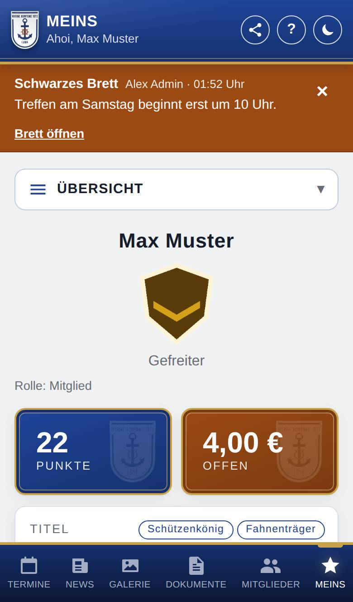
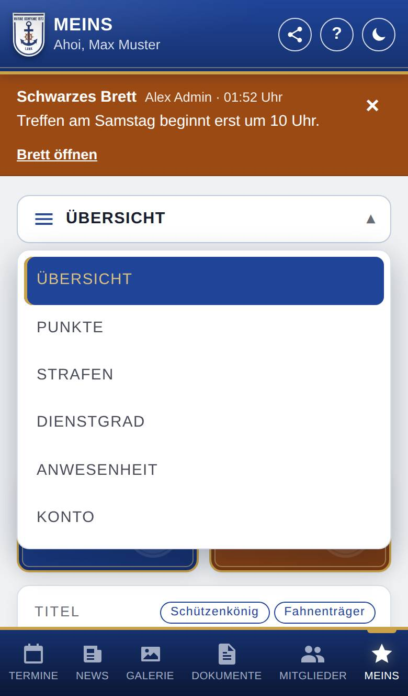

Meins: Übersicht
Die Übersicht zeigt deine eigenen Angaben auf einen Blick: Dienstgrad, Punkte, offene Beträge, Titel, Geburtstag, Eintritt und Ämter. Hier schaust du nur nach; ein Tipp führt dich zu den Einzelheiten.

So öffnest du die Seite
Tippe unten auf Meins. Die Übersicht ist die erste Seite. Steht oben im Menü etwas anderes, tippe auf das Menü und wähle Übersicht.
Was du hier siehst
- Menü oben (drei Striche): wechselt zwischen Übersicht, deinen Punkte, deinen Strafen, deinem Dienstgrad, deiner Anwesenheit und Konto. Es stehen nur die Bereiche darin, die es bei euch gibt.
- Dein Name, darunter das Abzeichen mit deinem Dienstgrad (wenn es bei euch Dienstgrade gibt) und dein Foto, falls eines hinterlegt ist.
- Rolle bzw. Rollen: welche Rolle(n) du in der App hast.
- Kachel Punkte: deine Summe der Punkte.
- Kachel Offen: wie viel bei den Strafen noch offen ist.
- Kachel Titel: deine Ehrentitel und Ämter, sonst „Keine“.
- Geburtstag und Eintritt: was du eingetragen hast, sonst „Nicht eingetragen“.
- Ämter: deine Ämter als Zeitstrahl, sonst „Du hast keine Ämter eingetragen.“
Kacheln und Zeilen erscheinen nur, wenn es den Bereich bei euch gibt.

So gehst du vor
Einzelheiten ansehen
- Tippe auf die Kachel Punkte oder Offen, um alle Einträge zu sehen.
- Tippe auf das Abzeichen, um deinen Dienstgrad mit Verlauf zu sehen.
- Tippe auf dein Foto, um es zu vergrößern.
Geburtstag oder Eintritt ändern
- Tippe auf die Zeile Geburtstag (bzw. Eintritt). Die Seite Konto öffnet sich.
- Ändere die Angabe dort und speichere.
Den Eintritt kannst du nur ändern, wenn es bei euch die Mitglieder gibt; sonst führt die Zeile nirgends hin.
Gut zu wissen
- Diese Seite sehen nur Mitglieder. Ohne Mitgliedschaft zeigt Meins nur dein Konto.
- Foto, Name, Rolle und Titel pflegen die Verantwortlichen in der Verwaltung, nicht du.
- Du kannst mehrere Titel haben. Sie hängen nicht von deinem Dienstgrad oder deinen Punkte ab. Gehört ein Titel zu einem Amt, hast du ihn, solange das Amt läuft.
- Bekommst du einen neuen Titel, kann dir die App eine Nachricht schicken. Das schaltest du unter Konto → Benachrichtigungen einstellen mit Titel: neu verliehen ein.